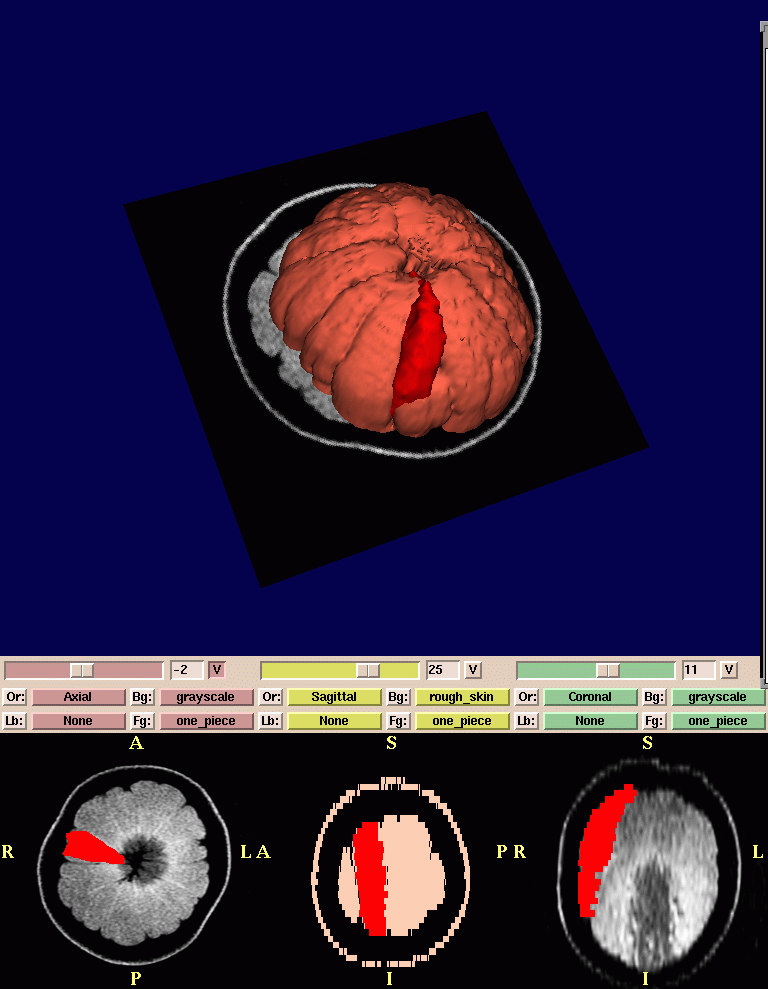
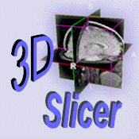
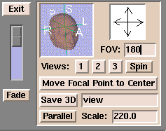

Slicer can be used to create many kinds of scenes, including:
- A single series of
grayscale images
- A complex scene comprised of several grayscale and
segmented data sets
- 3D models, such as the composite scene below of a
grayscale MR dataset of an orange, with a single
section of the orange (in red) and the rest of the orange (in orange)
Each scene
has two parts in both the Normal mode (shown below) and the 4x512 mode.
(Those two modes seem to be
the most popular viewing modes.)
The top portion is the 3D Viewer.
The bottom portion is the 2D Viewer.
Slicer has many controls over the 3D Viewer and 2D Viewer. Here are some of them.
Selecting the View mode
To select the View mode:
- Click View. A drop-down menu of available view modes appears.
- Select a view mode from the menu. The view will change to reflect your selection.
Different View modes are useful for different situations.
Most users prefer the Normal (shown above) or 4D view for observing data after they are done editing
and creating a scene.
Users also prefer the 4x512 view during the editing process.
Controlling the 3D view
There are several options for controlling the 3D view with the mouse:
- Left-click the view and move the mouse to rotate the view.
- Click the middle button (if available) on the view and move the mouse to move the view left, right, up, or down.
- Right-click the view and move the mouse to change the size of the view.
Annotations on the scene
Slicer can display annotations over images
when you move the mouse around the scene to edit or view data.
You can control the appearance of these annotations.
To control the annotations over images:
- Click More. A drop-down menu of modules appears.

- Click Anno. A panel appears.
- Select the annotation options you prefer.
- To save options, click File, then click Save Current Options. This will save your
options to a file called
Options.xml.
Controlling the 2D view
The 2D view of the scene (see below) can display multiple data sets in a variety of ways.
Each of the three separate windows displays the data as a view from one of the three major axes.
Note: Changing the 2D view may also change the 3D view.
Here are some of the ways to control the 2D view:
- To control whether a slice is visible in the 3D view,
click V for that window.
This is useful to view the orientation of multiple
data sets and models with respect to each other.
- To select a slice in a volume, move the
slider for that window.
- You can view up to three data sets at one time.
To control how each dataset appears:
- Click Fg to select the dataset in the foreground.
- Click Bg to select the dataset in the background.
- Click Lb to display a label map layer.
- Click Or to change the default orientation of the data.
- To change the window/level for one of the views, right-click the view.
A window appears. Adjust the sliders to change the display.

In the view above, you can see different combinations of these controls:
- In the first window, slice 0 is selected; the view is visible in the 3D view; the orientation is Axial; the grayscale data is in the background; the skin is in the foreground; and the label of one section of the orange is loaded as a label map (blue outline).
- In the second window, slice -15 is selected; the view is not visible in the 3D view; the orientation is Saggital; the skin is in the background; the section of the orange is in the foreground; and there is no label map.
- In the third window, slice -3 is selected; the view is not visible in the 3D view; the orientation is Coronal; the grayscale data is in the background; the section of the orange is in the foreground; and there is no label map.
Controlling the scene with the user interface panel
| Move the cursor over the Slicer icon: |

|
| The user interface panel appears: |

|
The controls on the user interface panel include:
- The slider on the left between Fade and Exit is useful
when you have data in the foreground and background.
When the slider is at the top, it will display only the foreground dataset;
when it is at the bottom, it will display only the background dataset.
When the slider is in between, it will blend the two data sets.
This is particularly useful when you are registering two data sets, and want to see how accurate the registration is.
- The head icon rotates the 3D view.
Click R (Right), L (Left), P (Posterior), A (Anterior), I (Inferior), or S (Superior) to rotate the image in each direction.
- The arrows pointing up, down, left, and right can rotate the 3D view in
the appropriate direction. Click the arrow and the 3D view will rotate.
- FOV stands for Field Of View, which is the size of your image.
If the image is too small, enter a larger value for FOV. If the image is too large, enter a smaller value for FOV.
- Save 3D saves the current 3D scene.
Enter a name for the scene in the field.
Slicer saves the scene to the directory where you started Slicer.
- Parallel toggles between a parallel projection
(which preserves parallel lines, and displays an object the same size
regardless of how far from the observer)
and a perspective projection (which displays closer objects as larger than farther objects).